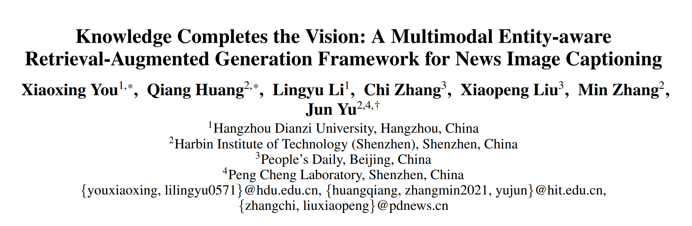
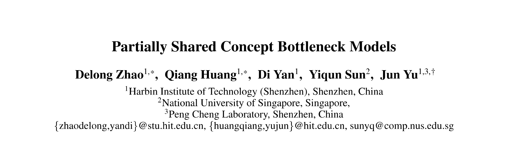
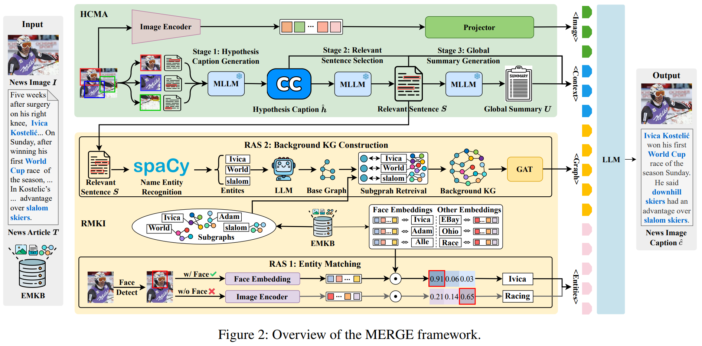
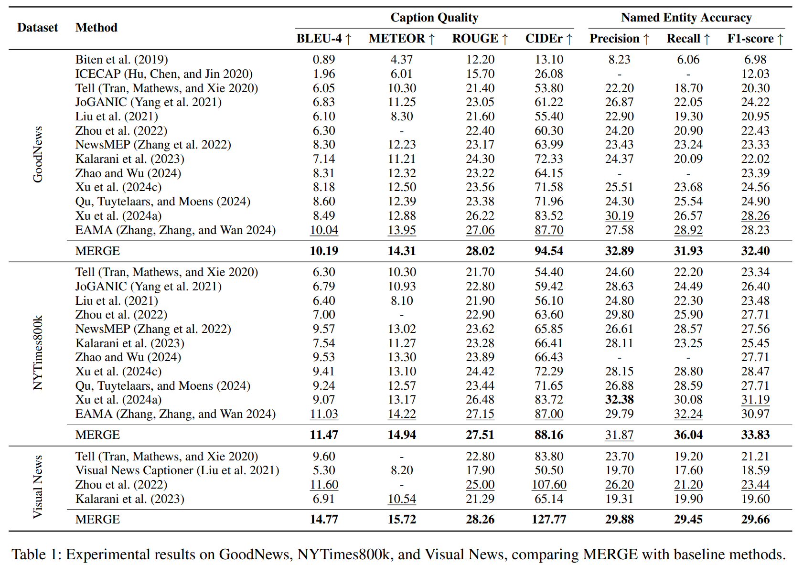
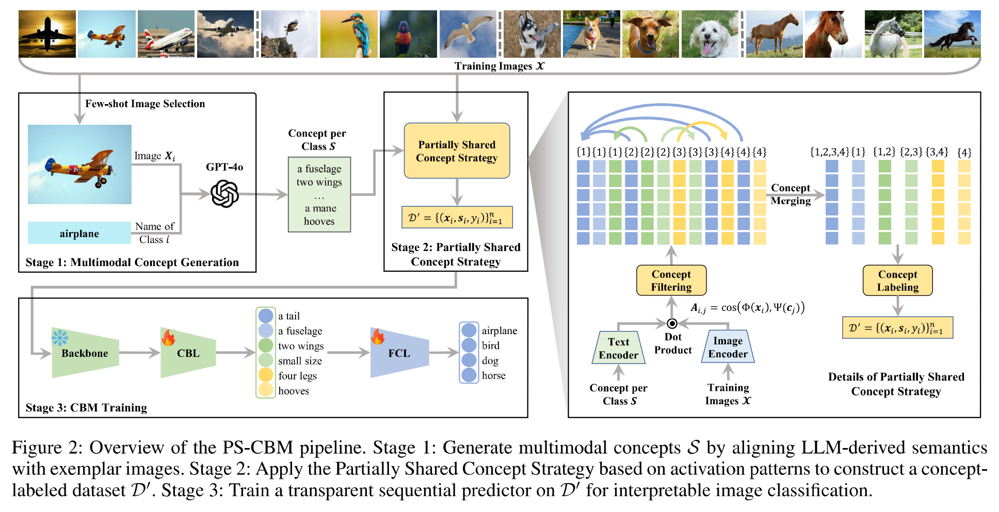
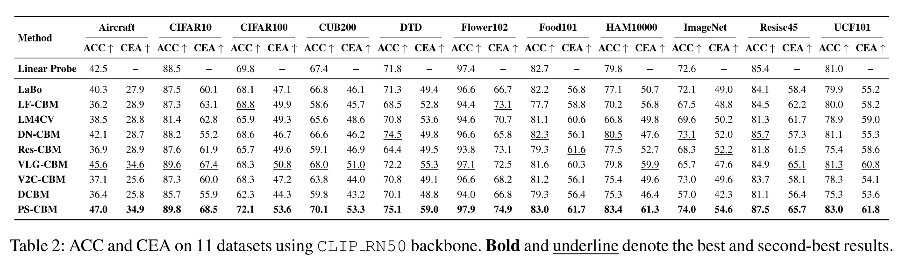

📢 TL;DR： M3AIL实验室在多模态理解与可解释AI领域取得双重突破！ MERGE框架（Oral）通过构建实体中心知识库，使模型能利用外部背景知识精准生成新闻图片 caption，实现了 caption 质量与实体识别性能的双重提升； PS-CBM模型（Poster）创新性地提出“部分共享”概念策略，解决了传统概念瓶颈模型概念冗余的难题，在保持极高预测精度的同时，显著增强了黑盒模型的可解释性。
2025年11月，人工智能顶级会议 AAAI 2026 (The 40th AAAI Conference on Artificial Intelligence) 录用结果公布。 由哈尔滨工业大学（深圳）多媒体智能前沿实验室（M3AIL Research Group）完成的两篇高质量论文成功入选。 其中，博士生尤晓兴（第一作者）的论文被录用为 Oral（口头报告）；硕士生赵德龙（第一作者）的论文被录用为 Poster（海报展示）。 两项研究均在俞俊教授、黄强教授指导下完成，展示了实验室在多模态学习与可解释深度学习方向的领先探索。

针对图像描述生成任务中实体信息缺失与匹配不准等核心挑战，本文提出了实体感知检索增强框架 MERGE。 该框架通过构建实体中心多模态知识库（EMKB）补充外部背景知识，并结合 HCMA 与 RMKI 模块优化图文细粒度对齐与视觉实体关联，显著提升了复杂场景下新闻描述生成的准确性与完整性。

在 GoodNews、NYTimes800k 和 Visual News 三个真实新闻数据集上的评测表明，MERGE 显著超越了现有最先进（SOTA）方法。在 GoodNews 和 NYTimes800k 上，CIDEr 指标分别提升了 +6.84 和 +1.16，命名实体识别（NER）的 F1 分数分别提升了 +4.14 和 +2.64。
此外，论文通过严苛的泛化性实验验证了框架的鲁棒性：在将 Visual News 排除在知识库构建之外（即模型从未见过该域数据）的情况下，MERGE 依然取得了 CIDEr +20.17 和 F1 +6.22 的惊人领先。这充分证明了 MERGE 并非依赖数据过拟合，而是具备了强大的跨数据集迁移与背景知识推理能力。

概念瓶颈模型（CBM）通过引入可理解的概念层来增强模型透明度，但面临概念冗余和精度下降的权衡。 本研究提出了 PS-CBM (Partially Shared Concept Bottleneck Models)。 该方法打破了传统“完全共享”或“完全独立”的概念模式，通过创新的部分共享策略，自动合并各类别间语义相似的概念。 此外，本研究提出了概念有效准确率（CEA）这一新指标，为量化解释成本与预测精度之间的平衡提供了理论支撑。

在 11 个真实世界数据集上的实验表明，PS-CBM 始终优于现有的 SOTA CBM 模型。 在显著减少所需概念数量（平均仅需约 500 个概念）的前提下，其分类准确率提升了 1.0%~7.4%。 这表明部分共享策略能有效剔除无关干扰，在保持模型紧凑性的同时，提升了分类的鲁棒性，为构建“透明且强大”的 AI 决策系统开辟了新路径。
以上研究由哈尔滨工业大学（深圳）牵头，联合人民日报社、鹏城实验室、新加坡国立大学等单位合作完成。 这些成果充分体现了实验室在应对复杂现实挑战（如深度背景理解、可信任 AI 决策）时的持续创新能力，是产学研深度融合的又一结晶。
未来，实验室将进一步探索多模态 RAG 技术与可解释架构在智慧媒体、医疗诊断等高信任需求场景的落地。 我们将继续致力于开发更具认知深度且易于人类理解的智能系统，推动人工智能技术向着更专业、更安全、更公平的方向发展。